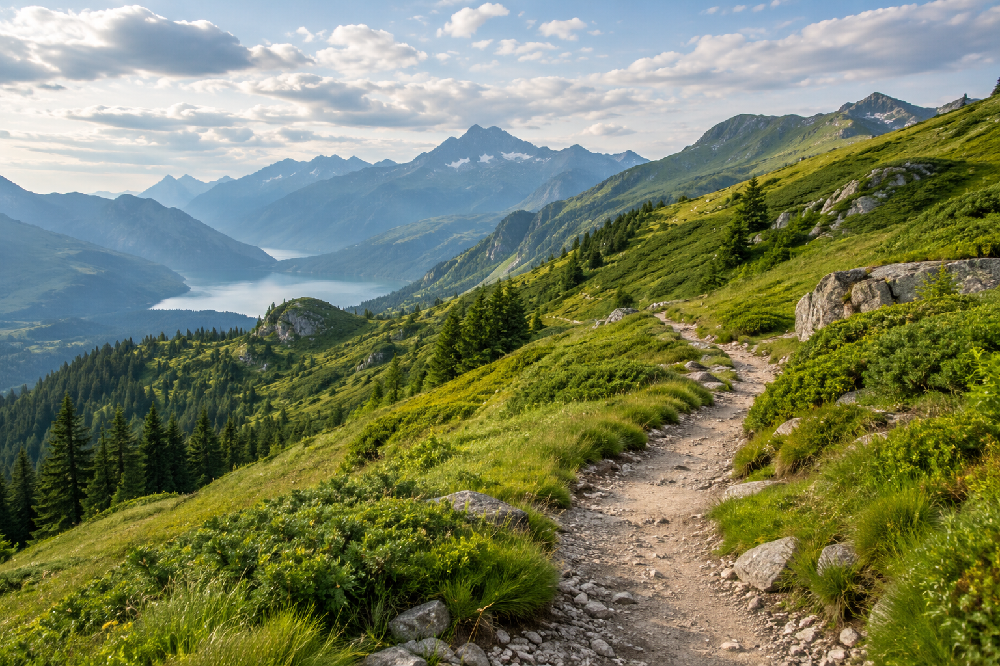
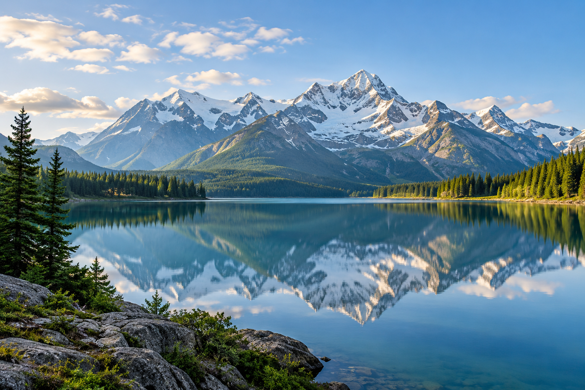

Projects

Forest Walk
Taking a quiet walk through the deep green forest pathways, capturing how the beautiful morning sunlight filters beautifully through the tall pine trees. It is a perfect way to experience peace and connect with the natural world around us while escaping the busy city life.
MORE
Coastal Escape
Exploring the clean sandy beaches and bright blue ocean waves, documenting the peaceful and calming vibe of the coastal nature. The sound of the rolling waves and the cool sea breeze make this place an absolute paradise for anyone looking for relaxation and fresh design inspiration.
MORE
Mountain Trail
Hiking up steep mountain trails surrounded by incredibly fresh air, massive green slopes, and winding pathways over the high hills. Reaching the top reveals an amazing panoramic view of the entire valley below, rewarding the long and challenging journey up the rocky mountainside.
MORE

Still Waters
Sitting by a perfectly calm lake that acts like a giant mirror, reflecting the massive mountains and the clear blue sky in the background. The stillness of the water creates a magical environment, making it a wonderful spot for photography and quiet thinking during the evening hours.
MORE

Golden Evening
Watching the beautiful orange, red, and yellow sunset glowing peacefully over open green valleys and countryside fields. As the daylight slowly fades away, the warm colors create a breathtaking scenery that inspires creativity and brings a wonderful feeling of calm to the mind.
MORE
Hidden Waterfall
Discovering a beautiful, cool waterfall tucked away deeply inside thick rainforest plants, ancient trees, and giant slippery rocks. The refreshing sound of crashing water splashing into a natural pool offers a hidden sanctuary for adventure lovers and nature enthusiasts alike.
MORE